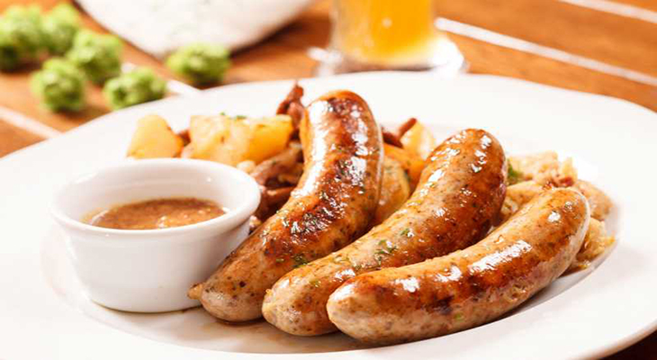

5 Dishes You Don’t Wanna Miss When Visiting Germany
Posted on March 31, 2018 at 02:05 PM
Wealthy and powerful, that’s how the world sees Germany. Undeniably, they kick ass not only in economic standing but also in delivering mouth drooling dishes .German cuisine is amazingly diverse and authentic; it is so much more than just sausage and meat. Anyone staying or visiting is guaranteed to find a big variety of traditional and comfort foods. The number of authentic dishes in the country is just astounding and will overwhelm anyone. But worry no more; Traveler’s FoodBox got your back. Keep scrolling for the top 5 list of Germany’s best dishes.
1. Bratwurst
Starting the list with the Germans most beloved sausage, we recommend you to take a bite of Bratwurst. Bratwürste are part of every German barbeque party and no matter where you go in Germany you are sure to encounter these yummy sausages. Loaded with calories and absolutely delicious, these bad boys are grilled and often served as a snack with a bread roll and hot mustard. Germans and foreigners alike undeniably love Bratwurst; don’t ask why.
2. Leberkäse
Next on the list is probably not the healthiest food in Germany. But Leberkäse definitely deserves a spot as it look and taste very good. Translated as liver cheese, Leberkäse is the country’s specialty food which is usually consists of corned beef, pork and bacon and is made by grinding the ingredients then baking it as a loaf until it has a brown crust. Very tasty but also very heavy Leberkäse reflects Germany’s strength and excellence.
3. Schnitzel
Next entry will conclude that Germans surely are crazy for meat dishes. 3rd on the list is the deep fried pride of Germany, the Schnitzel. Schnitzel is the staple of most German traditional restaurants. In Germany, Schnitzel is usually made of pork, although turkey and veal are also common, where a piece of meat is pound with a meat tenderizer, and covered with flour, egg and bread crumbs and then deep fried in oil or a lot of butter until it turn golden on the outside. A golden Schnitzel does look and taste exquisite and luxurious.
4. Spätzle
Far-off from the typical meat dishes on the list, Germany also has its popular and favorite pasta recipe. And you mustn’t miss having a taste of Spätzle when in Germany. Traditionally served as a side to meaty dishes, Spätzle is a simple yet genius combination of eggs, flour, salt and often a hint of fizzy water to fluff up the dough. It tastes heavenly under gravy and just perfect for vegetarians.
5. Sauerbraten

Ending the list with a luxurious German dish, we recommend you Sauerbraten. It is one of Germany’s best known dishes abroad for all the good reasons. Sauerbraten is a German meat pot roast — usually beef, Sauerbraten usually takes a lot of preparation to cook .To prepare a Sauerbraten you will need some high quality piece of beef and a lot of time. What makes it special is its heavenly marinade which may consist of herbs, spices, vinegar, and red or white wine. The end result is a juicy, tasty, tender and divine tasting dish that’ll capture anyone’s heart.
Categories
Recommended

Duis consectetur gravida
Nullam non magna lobortis, faucibus erat eu, consequat justo. Suspendisse commodo nibh odio.

Duis consectetur gravida
Nullam non magna lobortis, faucibus erat eu, consequat justo. Suspendisse commodo nibh odio.

Duis consectetur gravida
Nullam non magna lobortis, faucibus erat eu, consequat justo. Suspendisse commodo nibh odio.